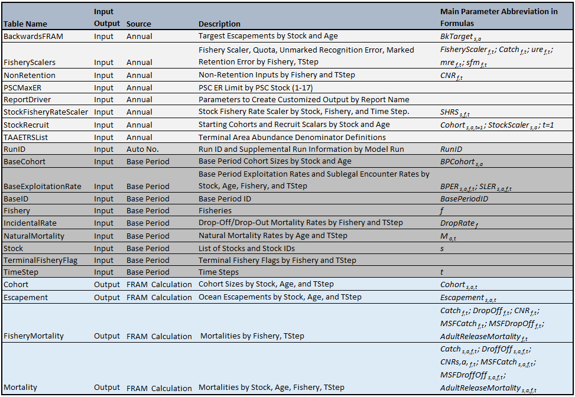

Coho Calculations
1. Coho Model Structure
1.1. Stocks
Currently, 123 stock groups are represented in Coho FRAM. Each of these stock groups have both marked (adipose fin clipped) and unmarked components to permit assessment of mark-selective fishery regulations; therefore, the current version of FRAM has a total of 246 stock units (Appendix 1). Model stocks may represent an individual salmon stock or an aggregate of stocks from the same region. Stock units represented in FRAM were chosen based on the level of management interest, their contribution to PFMC fisheries, and the availability of representative coded-wire tag (CWT) recoveries in the Regional Mark Information System (RMIS). Coho FRAM includes a comprehensive set of stocks originating from Central California to Southeast Alaska and is considered to represent total West Coast production. For coho, only age three fish are included in the model.
1.2. Fisheries
The FRAM includes pre-terminal and terminal fisheries in southeast Alaska, Canada, Puget Sound, and off the coasts of Washington, Oregon, and California. There are 198 fisheries in Coho FRAM A unique fishery identification number and fishery name for each of the FRAM fisheries are listed in Appendix 3. Terminal fisheries in Coho FRAM include individual freshwater fisheries. FRAM can model directed fisheries, mark-selective fisheries, and non-retention fisheries, and also calculates fisheries-related incidental mortalities.
1.3. Time Steps
The time step structure used in FRAM represents a level of resolution that corresponds to data availability, fishery management structure, and species-specific migration and maturation schedules. Recoveries of CWTs for each stock unit during years with widespread tagging and fisheries (the reference base period, explained further in Section 3) are used to estimate model parameters such as exploitation rates. The amount of recovery data available by stock unit and fishery in the historical CWT database limit the time-step resolution of the model. Decreasing the number of CWT recoveries in a time step by making the time step shorter can increase the variance of the estimated parameters in those strata. In recognition of these data limitations, efforts were made to restrict the level of time step resolution to that necessary for fishery management purposes.
At each time step, a stock experiences natural mortality, and can be subjected to pre-terminal fisheries, and terminal fisheries.
FRAM contains five time periods for coho, covering a single calendar year (Appendix 5).
Table 1. Time step structure used in Coho FRAM.
| Time Step | Months |
|---|---|
| 1 | January - June |
| 2 | July |
| 3 | August |
| 4 | September |
| 5 | October - December |
2. Assumptions and Limitations
Major assumptions and limitations of the model are briefly described below.
CWT fish accurately represent the modeled stock. Many FRAM stocks are aggregates of stocks that are represented by CWTs from only one production type, usually hatchery origin. For example, in nearly all cases wild/natural stocks are aggregated with hatchery stocks and both are represented by the hatchery stock’s CWT data. Therefore, for each modeled stock aggregate, it is assumed that the tagged and untagged fish are distributed and exploited at the same rates.
Each stock unit and age class is exploited as a single pool. All pre-terminal fisheries operate on the entire cohort simultaneously in each time step, and all terminal fisheries operate on the mature run.
Natural mortality is constant from year to year. Natural mortality is assumed to be constant across months for all stocks.
Stock distribution and migration is constant from year to year and is represented by the average distribution of CWT recoveries during the reference base period. We currently lack data on the annual variability in distribution and migration patterns of Chinook and coho salmon stocks. In the absence of such estimates, fishery-specific exploitation rates are computed relative to the entire cohort.
3. Model Parameterization
FRAM data are stored as tables in an ACCESS database. All the information needed for a “simple model run” (User Manual) is stored in these tables, containing input as well as output data. Input data can be grouped into two main categories: static base period data and annual run data. Main FRAM outputs are mortalities (landed, mark-selective, sublegal, non-retention, drop-off) and abundances (starting cohorts at each time step; abundances after natural mortalities, pre-terminal, and terminal fisheries).
Table 2. Coho FRAM MS Accesss Database Tables.

3.1. FRAM Input Data
FRAM input data consist of two main input types: base period reference data and annual data. Base period data remain constant until a new base period replaces the existing one. The principal base period inputs are stock-fishery specific exploitation rates. Other base period parameters include base period catches and cohort sizes. The second input type consists of annual data that can vary with each model run, such as stock specific abundance estimates, fishery catches, size limits, etc.
3.1.1. Base Period Data
CWT recoveries are used to estimate model parameters such as time/area/fishery exploitation rates and maturation rates for modeled stocks. The years from which CWT recoveries are used to estimate these parameters are referred to as the reference “base period.” These parameter estimates are derived through species-specific cohort analyses. Each cohort analysis is a series of procedures that use CWT recoveries and base period catch and escapement data to “back-calculate,” or reconstruct, a pre-fishing cohort size for each stock using assumed natural mortality and incidental mortality rates. See (Model Evaluation Workgroup, 2008) for a more detailed description of the cohort analysis procedures.
Model base period data for the Coho FRAM is derived from fishery and escapement recoveries of CWTs and terminal area run size estimates for the return years 1986-1992 (Packer et al. 2007). In 2006, the previously used base period data from 1986-1991 were re-analyzed, changes were made to the algorithm, and 1992-1997 catch year data were compiled. A decision was made to only incorporate the 1992 catch year with the previous base period data, and thus the coho base period for return years 1986-1992 was generated.
3.1.2. Annual Data
Coho FRAM uses five general types of input. Three of these input types (a, b, d) are submitted annually to reflect projected stock abundances and proposed fishery regulations for the current model year. The remaining two types of input (c, e) are specifications for fishery-related mortalities that can change as more information becomes available through additional data collection or studies, but typically do not change annually.
a. Cohort Abundance: For each stock unit, an annual abundance is obtained from a source that is independent of the model, typically in the form of an ocean age-3 run size (pre-fishing age-3 abundance in the ocean after natural mortality has been subtracted). In a pre-season context these abundances come from annual forecasts, whereas in a post-season context the abundances are derived from estimates of actual returns. For coho, an initial stock abundance is needed for adult fish (age-3) by mark status.
b. Fishery Landed Catch: The model provides three options for setting the catch in a fishery: a quota, a fishery scaler, and a harvest rate (for Puget Sound and Washington coastal terminal fisheries).
Quota: Catch in the fishery is set equal to a numeric value input by the user.
Fishery Scaler: The fishery is scaled relative to the effort during the reference base period using a scaler value input by the user.
Harvest rate: Using the Puget Sound TAMM, a terminal area harvest rate can be applied to terminal area fisheries.
FRAM inputs for quota and fishery scaler can be identified as either a conventional retention fishery or a mark-selective fishery and modeled accordingly. Modeling as a mark-selective fishery initiates additional calculations to estimate catches, encounters, and mortalities differently for marked and unmarked groups.
c. Release Mortality Rates: This is the mortality associated with the release of landed fish from hook-and-line and other gear types. Release mortality rates are designated by species, geographic area, fishery type and gear type (<a href = “https://framverse.github.io/fram_doc/calcs_appendices.html#Appendix_6_FRAMTAMM_fishery-related_mortality_rates_for_coho_salmon_(version_used_in_2021_pre-season_planning_models)” target = "_blank" title = “Appendix 6”). Release mortality is assessed when coho are not retained (“non-retention” or CNR fisheries) as well as in mark-selective fisheries. A number of studies have estimated release mortality for hook-and-line fisheries, and release mortality rates for troll and recreational fisheries in the ocean have been formally adopted by the PFMC. Release mortality in net fisheries with non-retention is estimated externally to FRAM and provided as an input to the model.
d. Mark-selective fisheries have two additional variations of “release” mortality that are described as either the inappropriate retention of an unmarked fish or the release of a marked fish that consequently experiences release mortality. The failure to release an unmarked fish is a user input to the model called “Unmarked Retention Error” (or Retention Error Rate) and is the proportion of the unmarked fish encountered that are retained. The release of marked fish is a user input to the model called “Marked Recognition Error” and it is the proportion of the marked fish encountered that are released; these released marked fish are then subject to release mortality. These rates are updated annually based on fishery monitoring data.
e. Other Non-landed Mortality Rates: This includes fishing-induced mortality not associated with directly handling fish. Drop-off mortality occurs when fish in sport and troll hook-and-line fisheries drop off the hook before they are brought to the vessel yet die from hook injuries. Drop-out mortality occurs when fish in commercial net fisheries are not brought on board but die from injury as a result of being netted. For simplicity, both types are referred to as drop-off mortality in FRAM. Net drop-out mortality rates vary depending on species, net type, or timing (pre-terminal or terminal) of the fishery. In general, a 5% drop-off mortality rate is applied to the landed catch to account for “other non-landed mortalities” in hook-and-line fisheries (Appendix 6).
4. Model Calculations
4.1. Overview
FRAM processes information through a time step loop, beginning with time step 1 and ending with time step 5 for coho. Within each time step, a series of four computational processes occur for each stock as depicted in Figure 1: (1) determine starting cohort size, (2) removal of natural mortality, (3) removal of pre-terminal mortalities, (4) removal of terminal fishery mortalities (time 5 only).

Figure 1. Conceptual flow chart for the Coho FRAM model.
4.2. Computational Processes
Cohort Abundance
Process 1: Cohort Abundance at the Start of the Time Step
The starting cohort size in time step 1 is a product of two parameters: (1) the base period cohort size for stock s at age 3 in the first time period (BPCohortss, a = 3) and (2) a stock and age-specific scaler (StockScalerss, a = 3). The stock recruit scaler is an annual model input.
(1)
where Cohorts, a = 3, t = 1 is the initial cohort size for stock s, age 3, during time step t=1.
Coho FRAM only models age-3 fish (a=3). The starting cohort size is the projected number of age-3 fish in January (JA3) of the fishing year for each stock. All coho escape in the final time step (t=5) and thus are not aged in the model.
Natural Mortality
Process 2: Natural mortality during each time step
During each time step, the stock-age cohort size at the start of the time step is decreased to account for natural mortality:
(2)
where Ma = 3, t is the discrete natural mortality rate for age 3 fish during time step t (Appendix 8).
Pre-terminal Fishery Mortality
Process 3: Pre-terminal Fishery Mortality
The remaining cohort is then subjected to removals by pre-terminal fisheries; both landed catch and non-landed mortalities associated with each fishery are calculated. FRAM simulates fishery mortalities using different processes depending upon the type of fishery: retention fishery (non-selective), non-retention fishery, or mark-selective fishery.
3a. In regular retention fisheries (non-selective), landed catch is estimated by:
(3)
where:
- BPERs, a = 3, f, t is the base period exploitation rate for stock s, at age 3, in fishery f, during time step t.
- FisheryScalerf, t is an annual model input that relates expected catch (or effort) in the model year back to average catch (or effort) druing the base period.
- PVs, a = 3, f, t is the portion of the stock cohort s, at age 3, during time step t that is of legal size in fishery f (i.e. portion vulnerable; PV). For coho, PV is always 1 and can be eliminated from the equation.
- SHRFs, f, t is the stock fishery rate scaler for stock s in fishery f during time step t. The SHRF is optional and can be used to adjust impacts for individual stocks in a fishery and time step; i.e., if FRAM output for an individual stock significantly deviates from expectations, then the user can make adjustments by providing a SHRF scaler.
The FisheryScalerf, t is the foundation for the fishery simulation algorithms. FRAM can evaluate two general types of fisheries: effort-based or catch-based. For effort-based fisheries, the FisheryScalerf, t is specified by the user to reflect expected effort during the model year relative to the average effort observed during the base period. For catch-based fisheries, the FisheryScalerf, t is computed by FRAM to obtain a user-specified catch level (i.e. a quota).
3b. Drop-off mortalities are estimated by multiplying either a) landed catch in a non-selective retention fishery, or b) total encounters in a mark-selective fishery, by a user-specified drop-off mortality rate (DropRatef see Appendix 7)
a) Non-selective retention fishery f:(4a)
(4b)
3c. Coho non-retention (CNR) mortalities are estimated for time periods when fishing is allowed, but the retention of coho is prohibited.
Non-retention mortalities are calculated external to the model, often derived using historical observations, and are model inputs in units of dead age-3 fish (EstCNRMortsf, t). Non-retention mortalities by stock are then calculated in FRAM by multiplying the total non-retention mortality by the stock proportion (PropCatch).
(5)
3d. Mark-selective fisheries (MSF) require additional computations to calculate both the landed catch and the mortalities due to the release of fish.
To simplify calculations, the SHRS are excluded from the below calculations:
For marked stock units, the landed catch is calculated using an additional term to account for marked-recognition error (the release of a marked fish) and is fishery and time step specific (mref, t):
(6a)
For unmarked stock units, the landed catch is calculated using an additional term to account for unmarked retention error (retaining an unmarked fish in a mark-selective fishery) and is fishery and time step specific (uref, t):
(6b)
Equations used to calculate adult release mortalities (AdultRelMort) in mark-selective fisheries must account for marked recognition (mre) and unmarked retention error (ure) for marked and unmarked stock units and utilize fishery and time step-specific release mortality rates (sfmf, t) (Appendix 6).
(7a) Marked:
(7b) UnMarked:
Drop-off mortalities in mark-selective fisheries are calculated by multiplying the drop-off mortality rate with the number of legal encounters, as described in process 3b above.
3e. All pre-terminal fishery mortalities in time step t for stock s at age 3 are totaled (TotMort) and the size of the cohort is reduced accordingly. Since the coho model contains only age-3 mature fish, the summing of fishery mortalities occurs only once in each time step.
(8)
The remaining cohort is then calculated as:
(9)
Process 4: Terminal Fishery Mortality
Terminal fishery mortality is calculated for the mature cohort only, using the same equations as for pre-terminal fishery mortality. Fishery mortalities are summed, and the remainder of the mature cohort constitutes the escapement from FRAM fisheries. Since only age-3 adult coho are modeled and the mature time step is always 5, age and time step parameters can be eliminated from the equations.
(10)
(11)
Escapement is defined as the number of fish that remain in the mature cohort after removal of all terminal-area fishery related mortality. For coho modeling, which includes freshwater fisheries, escapement represents the adult spawning abundance if mortality during “pre-spawning” holding time is negligible.
Process 5: TAMM Iterations
If the last time step has been completed, FRAM receives terminal fishery impacts (Figure 3) from the Terminal Area Management Module (TAMM) (Chapter 5). FRAM then estimates the terminal fishery impacts using the numbers from TAMM and compares that to the original FRAM results. If these numbers are equal (less than 0.1% or fewer than 4 fish difference), the model is done. If these numbers are not equal, an iterative process is initiated during which TAMM terminal fishery impacts are used to adjust FRAM terminal fishery impacts until there is convergence.
Finally, FRAM sends terminal marine and freshwater run sizes and fishing mortality to the TAMM file for use in additional calculations and final reporting.
4.3. Processing Schematic
To facilitate the understanding of the sequencing of FRAM processing steps, Table 3 provides an example of how a stock’s cohort is processed through time step from starting cohort to escapement.
The starting cohort in time step 1 is first reduced by natural mortality. The remaining cohort is vulnerable to pre-terminal fisheries. Coho not caught become the starting cohort of the next time step. This cycle repeats until time step 5, when 100% of coho mature after pre-terminal fishing. The mature cohort is susceptible to terminal fisheries. Coho not caught after pre-terminal and terminal fisheries in time step 5, go to escapement.
Table 3. Example values of Coho FRAM processing steps for a stock.
4.4. Exploitation Rate Calculation
FRAM calculates stock-specific mortalities and escapements that are ultimately used to compute exploitation rates (ER). Exploitation rate calculations are not part of the main FRAM algorithms and are not calculated by FRAM Exploitation rates are computed from FRAM or TAMM output as the sum of all fishery mortalities divided by fishery mortalities plus escapement.
(12) $$ER_s = \frac{\displaystyle\sum\limits_{t} TotMort_{s,a \! = \! 3,t}}{\displaystyle\sum\limits_{t} TotMort_{s,a \! = \! 3,t} + Escapement_{s}}$$
4.5. Bias Corrected Mark-Selective Fishery Equations for Coho
The total number of unmarked mortalities in MSF is underestimated by models relying on the linear relationship between exploitation rate and release-mortality rate. The actual mortality rate of unmarked fish is an increasing function of the time step-specific exploitation rate. When MSFs operate during a modeled time step, unmarked mortalities are underestimated because released fish may encounter the fishing gear more than once during the modeled time step and the unmarked-to-marked fish ratio for all fish in the pool increases during the time step as a result of the selective removal of marked fish in a mark-selective fishery. See (Conrad, Hagen-Breaux, & Yuen, 2013) for a detailed description of the equations.
Bias adjusted exploitation rates for marked and unmarked stock units are calculated as:
(13)(10)
(14) $$\delta_{s,t}^w = \sum_f \frac{ER_{s,f,t}^M}{\displaystyle\sum_f ER_{s,f,t}^M} \times \delta_f$$
where:
- ERs, f, tM is the marked exploitation rate of stock s in fishery f during time step t
- δf is the release mortality rate in (MSF) fishery f
- δs, tW is the weighted release mortality rate for stock s during time step t
- ∑fERs, tM is the marked exploitation rates summed over fisheries for stock s at time step t
These exponential equations were implemented to estimate exploitation rates in Coho FRAM for stocks experiencing release in mark-selective fisheries during a given time step.
5. Terminal Area Management Module
The FRAM program interacts with the TAMM, a species-specific Microsoft Excel file, which allows users to specify alternative terminal fishery inputs and to calculate impacts on a finer level of resolution than FRAM. TAMM has separate sections for each of the six Puget Sound terminal regions defined in the Puget Sound Salmon Management Plan (PSSP 1985, Table 3) for the State of Washington and the Treaty Tribes of Puget Sound. TAMM is best understood in its historic context. It is a terminal-area-centric fisheries model. Prior to FRAM development, information of stock-specific fishery impacts was not readily available. Management was based on terminal run reconstructions that assigned 100% of terminal catches to the local stock and computed terminal harvest rates as catch in the terminal area divided by terminal run size. To this day, most TAMM inputs for terminal marine fisheries are still derived by including non-local stock impacts. FRAM takes these inputs from TAMM and accounts for non-local stock impacts before reporting stock specific impacts back to TAMM. TAMM also develops alternative terminal inputs and modeling for the Washington coast, as well as generating inputs for Columbia River models. Additional TAMM functionality also supports development of unique regional management goals and allows managers the flexibility to analyze and report FRAM model output according to their needs.
Table 4. Puget Sound Terminal Management Regions.
| Management Regions |
|---|
| Nooksack-Samish |
| Skagit |
| Stillaguamish-Snohomish |
| South Sound |
| Hood Canal |
| Strait of Juan de Fuca |
Common TAMM features:
- Receive inputs for TAMM terminal fisheries
- Receive input for TAMM stock management criteria (updated annually)
- Provide fishery inputs to FRAM during FRAM-TAMM iterations
- Receive FRAM output of fishery impacts and abundances
- Use FRAM output to complete TAMM fishery impact modeling for Puget Sound and the Washington Coast
- Generate TAMM reports of combined FRAM and TAMM fishery impacts
FRAM iteratively finds the fishery scalers that produce the same catches (CatchFRAM) as those supplied by TAMM (CatchTAMM) in Puget Sound and Washington coastal fisheries (Figure 3). TAMM catches are either directly input into TAMM as catch values or calculated by TAMM with user input harvest rates (HR) multiplied by a unique terminal run size definition (TRS). The TRS for a TAMM region/stock represents ‘run-to-the-river’ of a stock plus catches of all stocks in the terminal fisheries designated for that region. In coho FRAM-TAMM, terminal run size definitions can be customized (using the TAAETRSList table in the MS Access database) and must be aligned with calculations used for each model input.
FRAM calculations for each terminal area:
- Sum escapements over appropriate time steps
- Add terminal catches (CatchFRAM) to calculate TRS (includes non-local stocks)
- Calculate the FRAM fishery scaler that produces the CatchTAMM:
FisheryScaler(area, timestep) = CatchTAMM(area, timestep) ÷ CatchFRAM(area, timestep)
- Rerun FRAM and repeat these steps until CatchTAMM is within 0.1% (or fewer than 4 fish) of CatchFRAM.

Figure 3. Conceptual flow chart for FRAM-TAMM calculations.
6. Backwards FRAM
Backwards FRAM (bkFRAM) is a utility that determines FRAM starting cohorts when estimates of escapements and fishery catches (landed and non-retention) are provided. The program iteratively adjusts stock recruit scalers (a surrogate for starting cohorts, see equation below) and runs FRAM forward until the resulting escapements match the target escapements. Starting cohorts are in units of January-age-3 adult fish.
Post-season bkFRAM runs are generally conducted to create the starting cohorts that result in observed escapements given known fishery impacts. These cohorts are needed to calculate exploitation rates.
The calculation is based on adding time step fishery mortalities of a stock to the escapement target, expanding for natural mortality occurring in each time step, and working backwards from time step 5 to time step 1. The mortalities are calculated by summing landed, drop-off, and non-retention mortalities over all fisheries for a stock and time step.
Mark-selective fishery bias correction calculations used for coho produce an error when the exploitation rate exceeds 100%. This frequently occurs during early iterations, because the abundances from the seed run (usually the pre-season run) are not related to the post-season fishery catches (e.g., low pre-season forecasts but high post-season terminal catches). To avoid errors, the first iteration initiates starting cohorts scaled 1000 times greater than the base period abundance. Additionally, the first 7 iterations are run without bias correction to get sufficiently close to the target escapement, before adding mark-selective fishing bias calculations for all remaining iterations.
(16)
where:
- BkTarget is the backwards FRAM run size/escapement target
- BPCohort is the base period starting cohort abundance
- StockScaler is the stock recruit scaler (abundance)
The program iterates until the FRAM escapement is within one fish of the target stock escapement and then terminates the iteration process.
(17)
where:
- FRAMescapement is the escapement resulting from a forward FRAM run.
7. Output Reports
Model results are available in FRAM screen reports viewed within the software, FRAM reports, TAMM Microsoft Excel files, or can be extracted from the species-specific Microsoft Access database associated with the FRAM run. FRAM reports include summaries of projected catch and mortalities by fishery, stock, and age. The TAMM files provide comprehensive summaries of fishery mortalities, exploitation rates, run sizes, and escapements for key stocks in the PFMC and North of Falcon (NOF) annual pre-season planning process, as well as Canadian coho stocks relevant to the Pacific Salmon Treaty (PST). For a full scope of FRAM report generating functions, refer to the online FRAM User Manual.